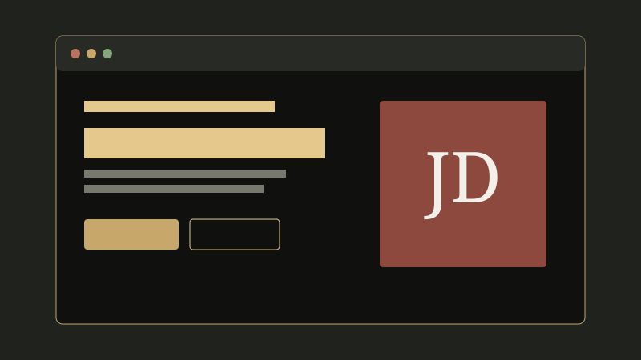
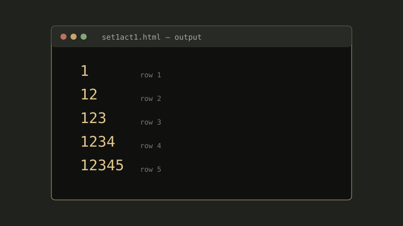
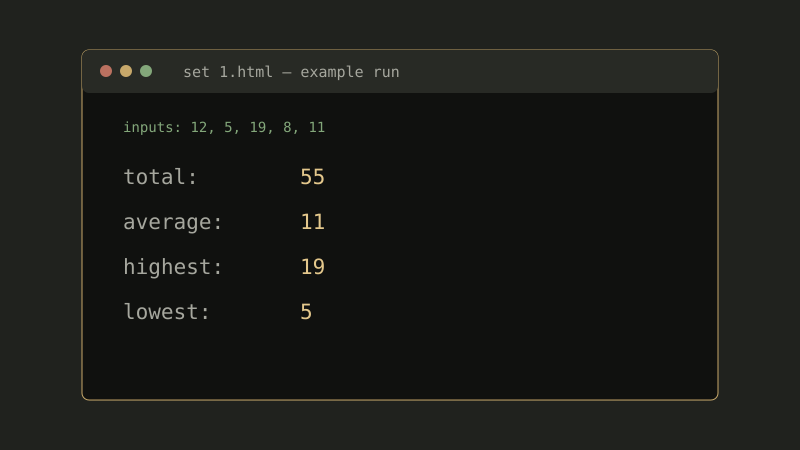
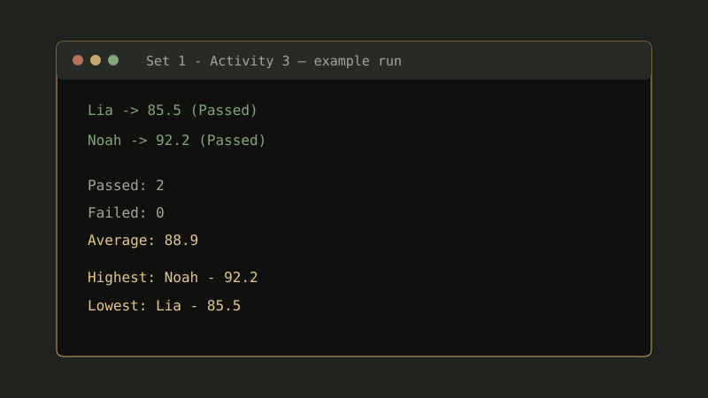

Personal portfolio website
A six-page portfolio with responsive navigation, a saved theme toggle, skill animations, and a contact form that validates input and prepares an email draft.

Number pattern with loops
Uses nested loops to build five lines of increasing digits, then displays the pattern in the page and browser console.

Number statistics calculator
Prompts for five numbers and calculates their total, average, highest value, and lowest value, displaying the results on the page and in the console.

Student grade analyzer
Collects student names and quiz, midterm, and final scores; calculates weighted grades, pass/fail counts, class average, and highest and lowest results.
Ready to learn through real work.
I’m building skills in HTML, CSS, JavaScript basics, computer hardware, and troubleshooting. I welcome clear, beginner-friendly tasks where I can contribute and learn from feedback.
Discuss an assignmentSimple web pages
Basic static pages using HTML and CSS, with responsive layout practice.
Small website updates
Content edits, simple styling changes, and straightforward JavaScript interactions.
IT documentation
Organizing steps, notes, or checklists for basic hardware and troubleshooting tasks.